Chapter 10B
Decision Quotes
Static reading edition generated from the Decision Quotes notebook.
 Appendix - Decision Quotes
Appendix - Decision Quotes
Appendix - Decision Quotes¶
This appendix collects quote images used throughout the "Decision Intelligence with AI" book. The following quotes are grouped by Decision Intelligence framework context, with a brief note connecting each quote to the components of the Decision Intelligence framework introduced and applied throughout the book.
Framework Overview¶
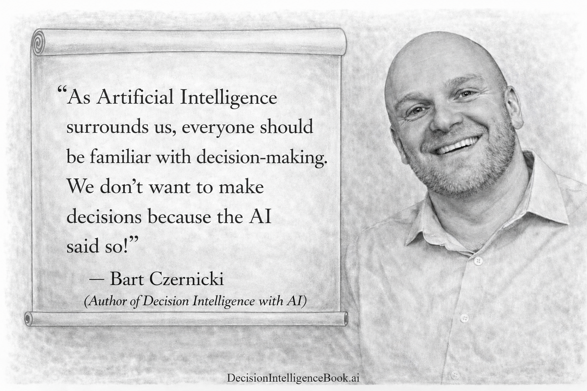
Quote: "As Artificial Intelligence surrounds us, everyone should be familiar with decision-making. We don't want to make decisions because the AI said so!"
Attribution: Bart Czernicki, author of Decision Intelligence with AI.
Decision Intelligence: This quote cautions us to leverage AI as a reason to improve human judgment rather than outsource it blindly. The Decision Intelligence framework (process) helps people use AI as a structured partner while still understanding decision-making fundementals.

Quote: "If you can't describe what you are doing as a process, you don't know what you're doing."
Attribution: W. Edwards Deming, engineer, statistician, and management consultant.
Decision Intelligence: This quote connects directly to the book's framework mindset. Better decisions become repeatable when people can describe the process: how decisions are framed, what intelligence is gathered, how choices are executed, how they are communicated, and how outcomes are monitored.
Quote: "If we raised the quality of debt decision-making in the U.S. by a modest 5%, trillions of dollars could stay in people's pockets."
Attribution: Bart Czernicki, author of Decision Intelligence with AI.
Decision Intelligence: Even small improvements in repeated high-stakes decisions can compound into enormous value, which is the central motivation for treating decision-making as a capability that can be designed, measured, and improved.
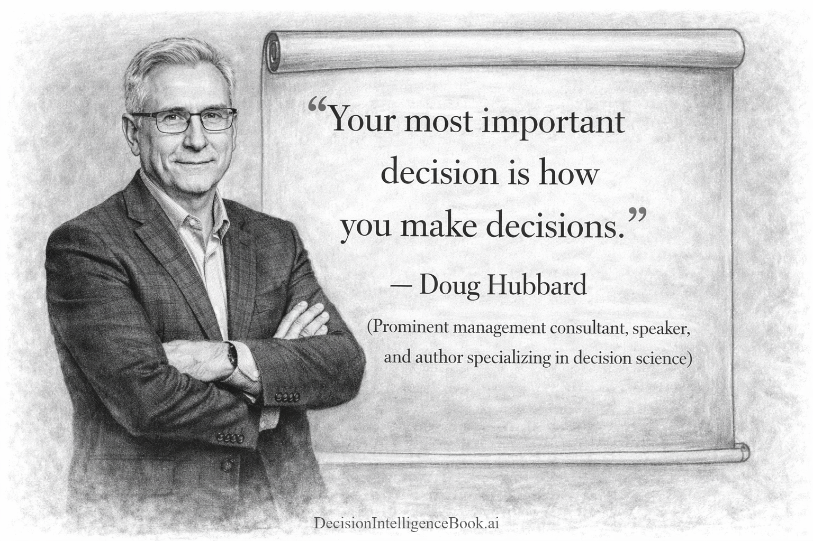
Quote: "Your most important decision is how you make decisions."
Attribution: Doug Hubbard, management consultant, speaker, and author specializing in decision science.
Decision Intelligence: This quote points to meta-decision quality: the process matters as much as the individual choice. Decision Intelligence focuses on improving the machinery of deciding, including frames, information, reasoning, communication, and monitoring.
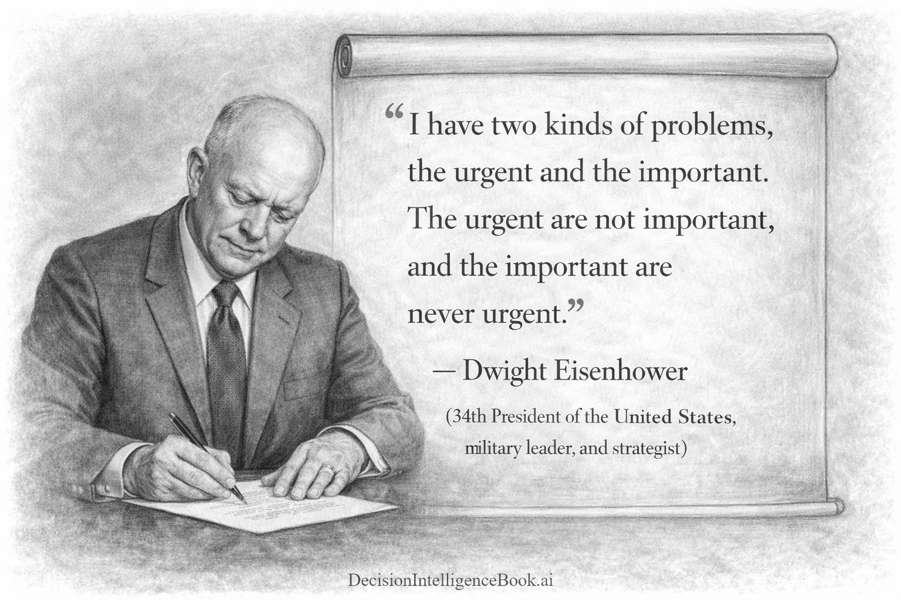
Quote: "I have two kinds of problems, the urgent and the important. The urgent are not important, and the important are never urgent."
Attribution: Dwight Eisenhower, 34th President of the United States, military leader, and strategist.
Decision Intelligence: Eisenhower's distinction is a compact framework for prioritization. It reminds decision-makers to separate time pressure from true value, so execution effort is allocated to the decisions and actions that matter most.
Decision Framing¶
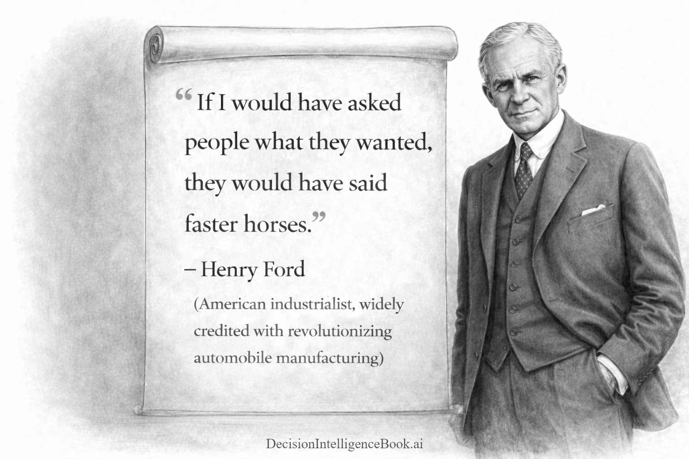
Quote: "If I would have asked people what they wanted, they would have said faster horses."
Attribution: Henry Ford, American industrialist.
Decision Intelligence: This quote illustrates why framing matters before gathering requirements or choosing options. A narrow frame can trap a decision around current constraints, while a better frame asks what underlying job, value, or outcome the decision is really trying to improve.
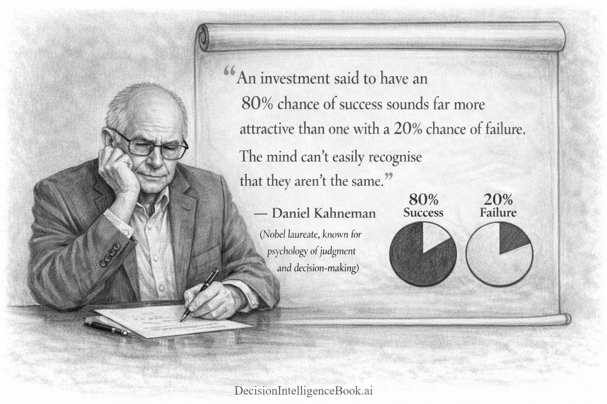
Quote: "An investment said to have an 80% chance of success sounds far more attractive than one with a 20% chance of failure. The mind can't easily recognise that they aren't the same."
Attribution: Daniel Kahneman, Nobel laureate known for psychology of judgment and decision-making.
Decision Intelligence: This quote highlights framing effects: equivalent probabilities can feel different when presented as gains or losses. Decision framing should expose these transformations so the team can reason about the same underlying uncertainty instead of reacting to wording.
Gathering Intelligence¶

Quote: "In God we trust. All others must bring data."
Attribution: W. Edwards Deming, statistician and quality guru.
Decision Intelligence: Gathering Intelligence is the discipline of moving beyond confidence, hierarchy, or opinion toward evidence. Data does not eliminate judgment, but it gives decision-makers something measurable to reason over.

Quote: "If we have data, let's look at data. If all we have are opinions, let's go with mine..."
Attribution: Jim Barksdale, former CEO of Netscape and business executive.
Decision Intelligence: This quote captures the practical balance between evidence and execution. The Gathering Intelligence step should make the best available evidence visible before preferences, rank, or persuasion dominate the decision execution. If a decision has been arrived at, then only new data (evidence) should be a reason to revisit the decision.

Quote: "The four conditions that characterize wise crowds: diversity of opinion, independence, decentralization, and aggregation."
Attribution: James Surowiecki, journalist and author of The Wisdom of Crowds.
Decision Intelligence: Collective intelligence can improve decisions when viewpoints are independent and properly combined. This connects to Gathering Intelligence because people, experts, agents, and models can all be treated as information sources whose judgments need careful aggregation.

Quote: "Price is what you pay. Value is what you get."
Attribution: Warren Buffett, investor.
Decision Intelligence: Good intelligence gathering distinguishes visible cost from expected value. A decision can look attractive or expensive at the surface while the real tradeoff depends on outcomes, uncertainty, timing, and value delivered.
Decision Execution¶
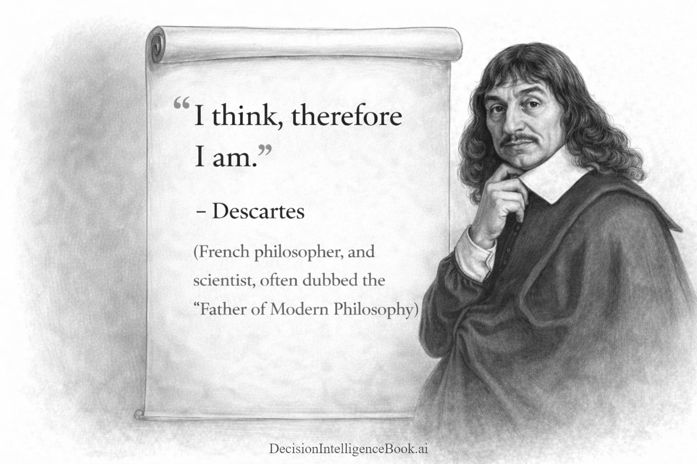
Quote: "I think, therefore I am."
Attribution: Rene Descartes, philosopher and scientist.
Decision Intelligence: Decision execution depends on deliberate reasoning as well as action. This quote anchors the intuition and reasoning modules by reminding decision-makers that how they think shapes what they choose and how they justify the choice.
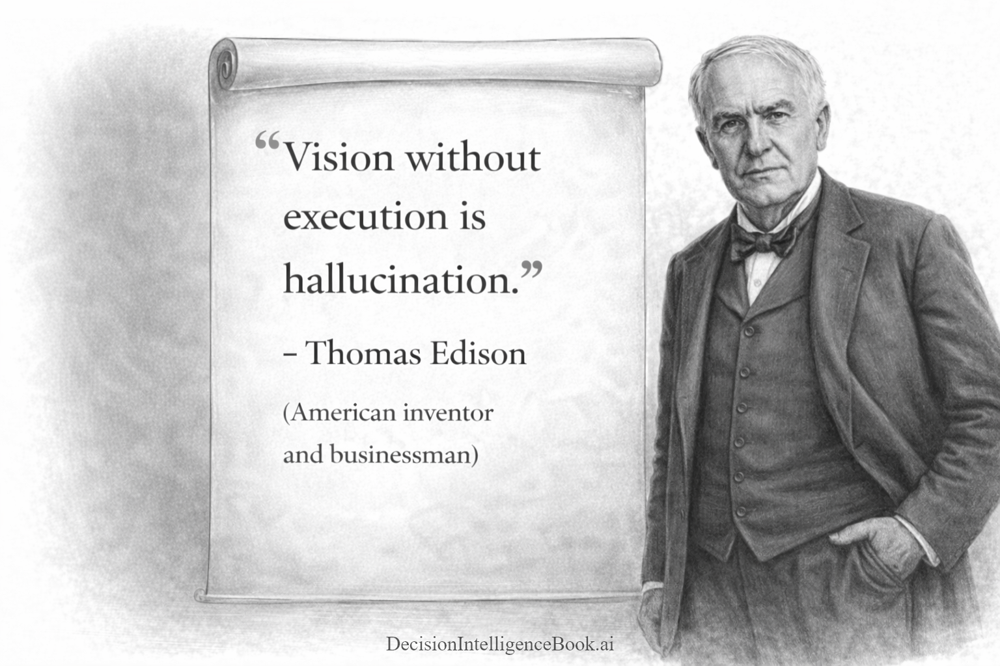
Quote: "Vision without execution is hallucination."
Attribution: Thomas Edison, inventor and businessman.
Decision Intelligence: A recommendation has limited value until it becomes an executable choice. Decision Execution turns framed options and gathered intelligence into actions, commitments, tools, and measurable outcomes.
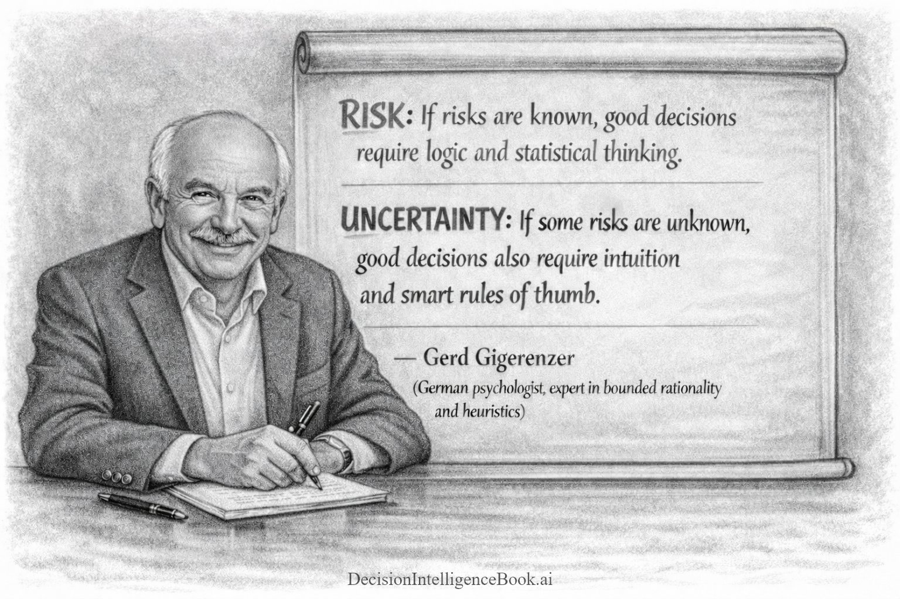
Quote: "Risk: If risks are known, good decisions require logic and statistical thinking. Uncertainty: If some risks are unknown, good decisions also require intuition and smart rules of thumb."
Attribution: Gerd Gigerenzer, psychologist known for bounded rationality and heuristics.
Decision Intelligence: Decision Execution is not one-size-fits-all. Known risks may call for quantitative methods, while deeper uncertainty may require heuristics, intuition, and adaptive rules that work under limited information.
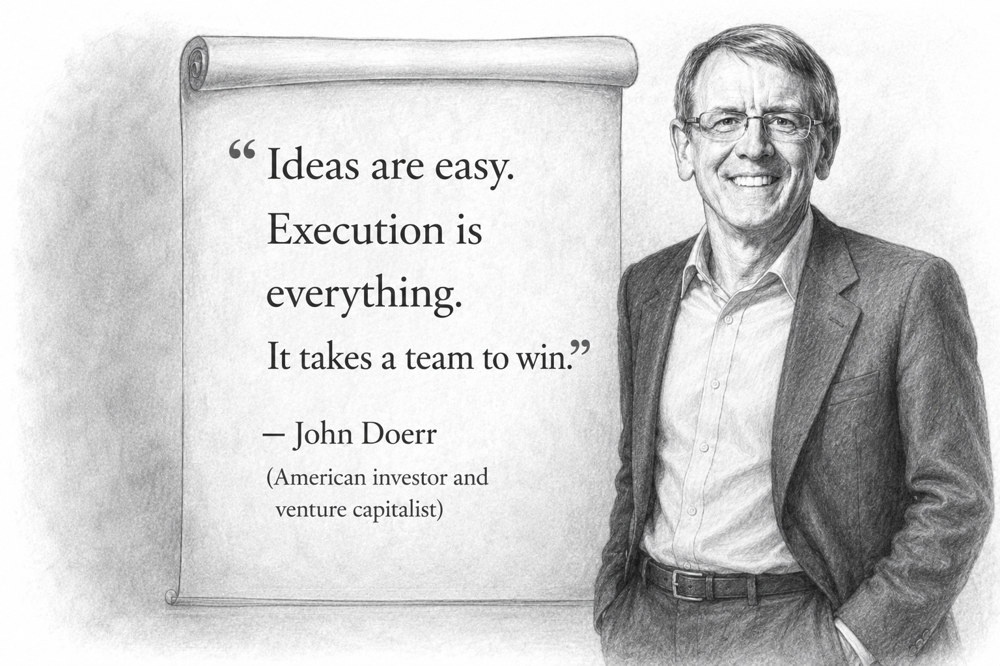
Quote: "Ideas are easy. Execution is everything. It takes a team to win."
Attribution: John Doerr, investor and venture capitalist.
Decision Intelligence: Execution quality includes coordination, ownership, and follow-through. This quote fits decisions that move from analysis to organizational action, where teams must align around the chosen path.
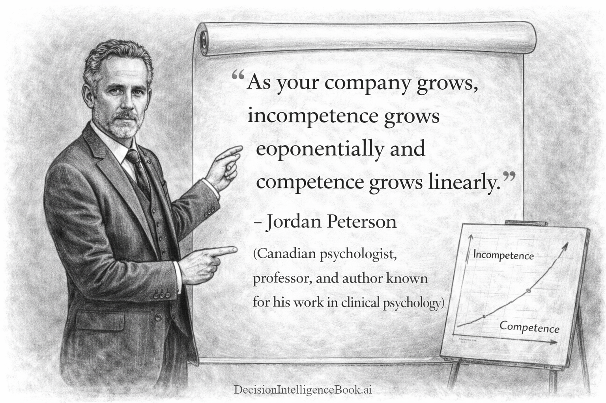
Quote: "As your company grows, incompetence grows exponentially and competence grows linearly."
Attribution: Jordan Peterson, psychologist, professor, and author.
Decision Intelligence: Scaling decision execution creates coordination and quality-control problems. As organizations grow, decision systems need structure, feedback loops, governance, and clear accountability so execution quality does not degrade faster than capability improves.
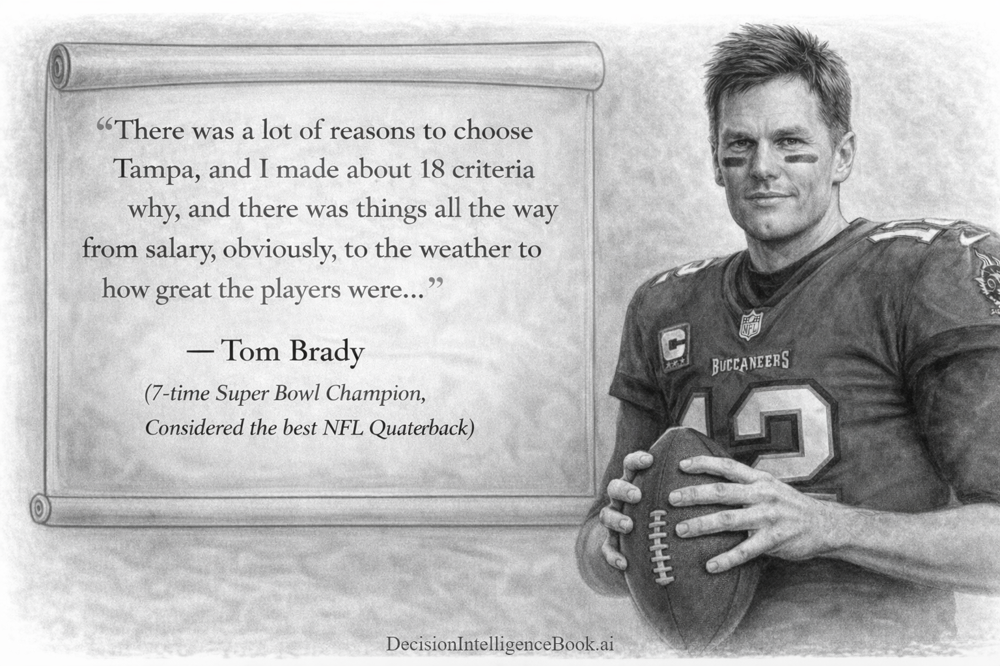
Quote: "There was a lot of reasons to choose Tampa, and I made about 18 criteria why, and there was things all the way from salary, obviously, to the weather to how great the players were..."
Attribution: Tom Brady, seven-time Super Bowl champion.
Decision Intelligence: Brady's criteria list is a practical example of structured decision execution. By naming criteria before choosing, decision-makers can compare alternatives more explicitly and avoid relying only on memory, emotion, or the most salient factor.
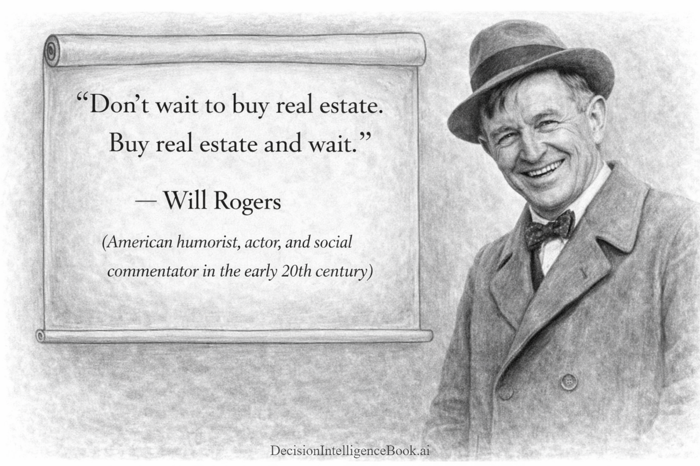
Quote: "Don't wait to buy real estate. Buy real estate and wait."
Attribution: Will Rogers, humorist, actor, and social commentator.
Decision Intelligence: This quote emphasizes timing, patience, and long-horizon execution. Some decisions are less about selecting the perfect moment and more about choosing a resilient strategy, committing to it, and letting time affect the outcome.

Quote: "Take time to deliberate, but when the time for action comes, stop thinking and go in."
Attribution: Napoleon Bonaparte, French emperor and military leader.
Decision Intelligence: This quote captures the transition from analysis to action. Decision Execution requires enough deliberation to improve quality, but also a clear moment when the team commits, acts, and learns from the outcome.
Decision Communication¶
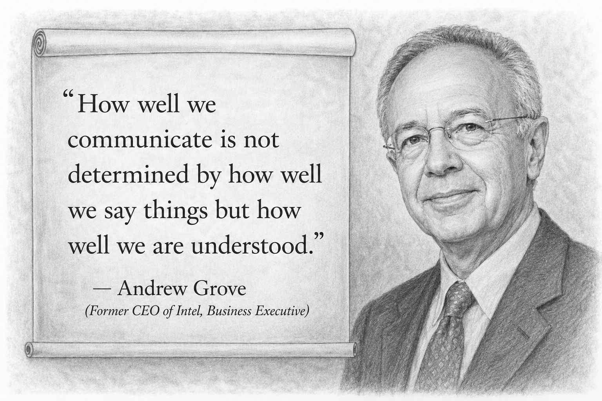
Quote: "How well we communicate is not determined by how well we say things but how well we are understood."
Attribution: Andrew Grove, former CEO of Intel and business executive.
Decision Intelligence: Decision Communication is measured by shared understanding, not by the elegance of the explanation. A decision has been communicated well when stakeholders understand the recommendation, rationale, tradeoffs, risks, and what action is expected next.